Code
# Data
data_ev <- read.csv("Data/EV_Population.csv")
cat("Jumlah Baris:",nrow(data_ev),
"\nJumlah Kolom:", ncol(data_ev))Jumlah Baris: 92676
Jumlah Kolom: 8Code
datatable(data_ev %>% head(100))# Data
data_ev <- read.csv("Data/EV_Population.csv")
cat("Jumlah Baris:",nrow(data_ev),
"\nJumlah Kolom:", ncol(data_ev))Jumlah Baris: 92676
Jumlah Kolom: 8datatable(data_ev %>% head(100))Visualisasi distribusi data berbasis frekuensi dalam bentuk batang.
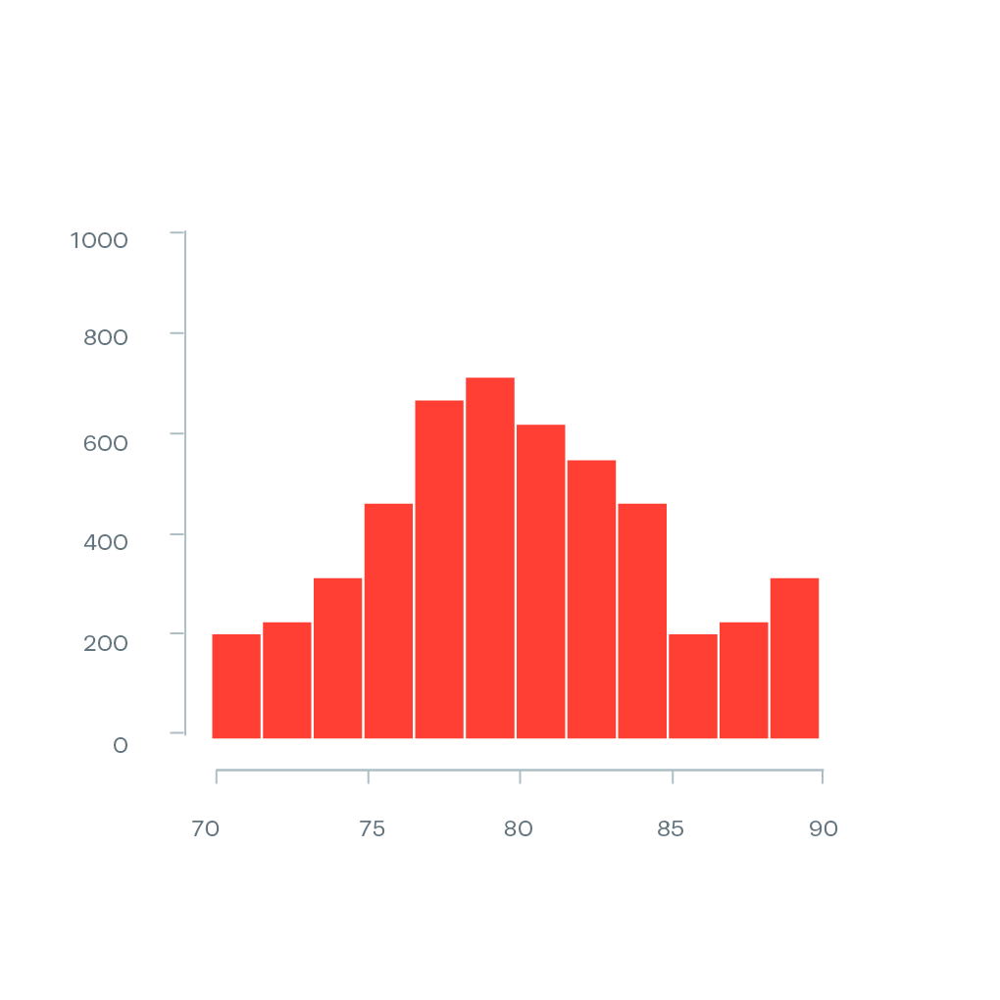
# Buat data simulasi
set.seed(123) # Untuk reproduksibilitas
data_hist <- data.frame(
Value = rnorm(1000, mean = 80, sd = 5) # 1000 sampel dengan distribusi normal
)
# Buat Histogram
ggplot(data_hist, aes(x = Value)) +
geom_histogram(binwidth = 2, fill = "red", color = "white") + # Batang histogram
labs(title = "Histogram Distribusi Data", x = "Nilai", y = "Frekuensi") +
theme_minimal()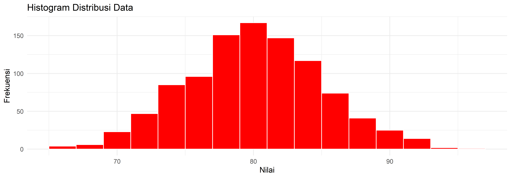
Digunakan untuk membandingkan distribusi kategori dua arah (misalnya populasi pria vs wanita).
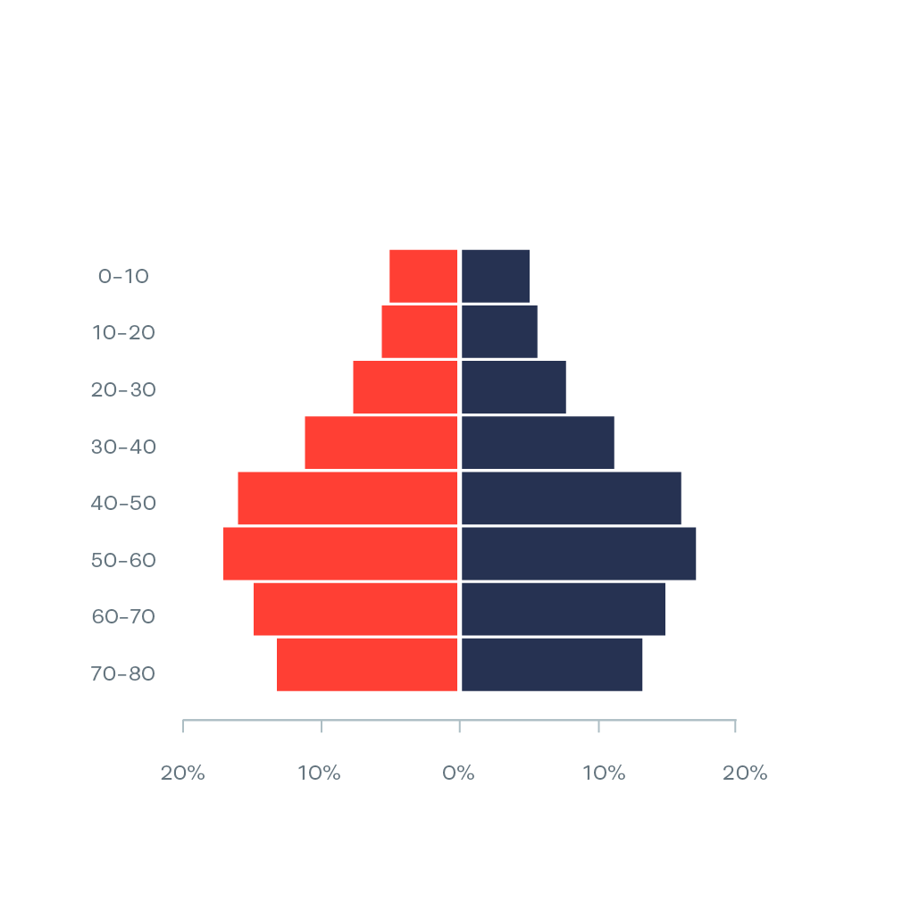
Metode visualisasi ketidakpastian statistik dalam data.
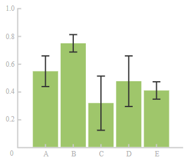
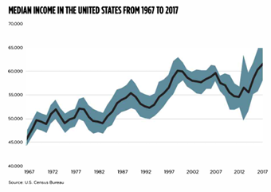
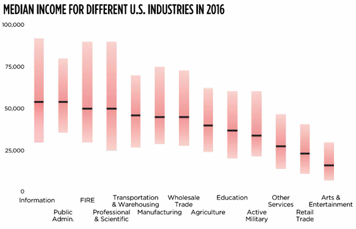
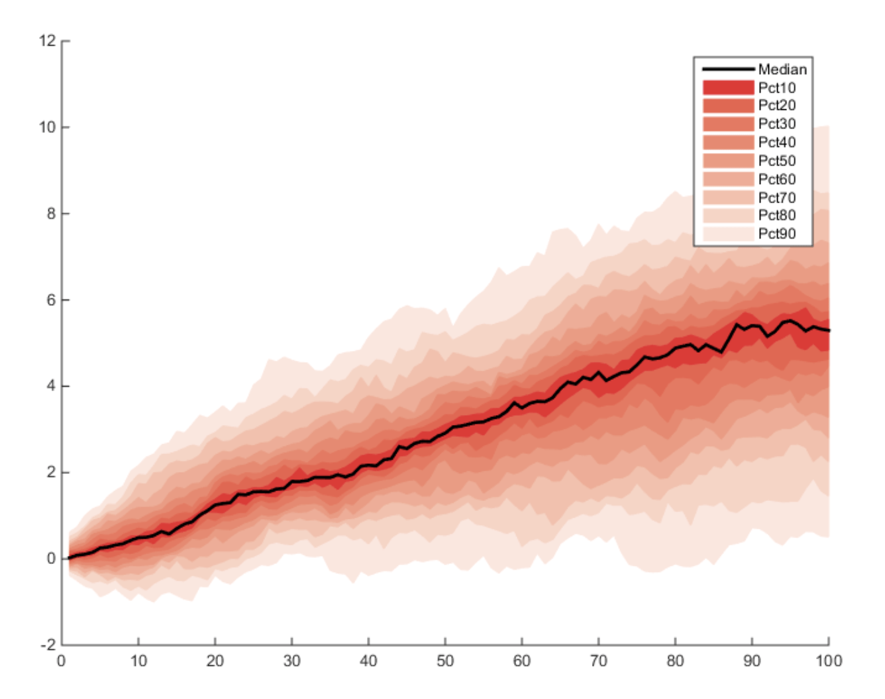
Menampilkan lima ringkasan data: minimum, Q1, median, Q3, dan maksimum.
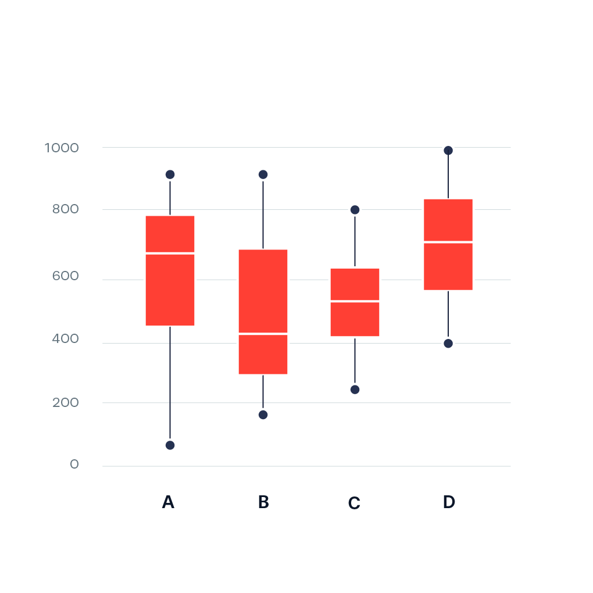
Digunakan dalam analisis keuangan untuk menunjukkan harga tertinggi, terendah, pembukaan, dan penutupan.
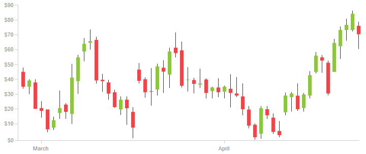
Kombinasi antara boxplot dan density plot untuk memahami distribusi data.
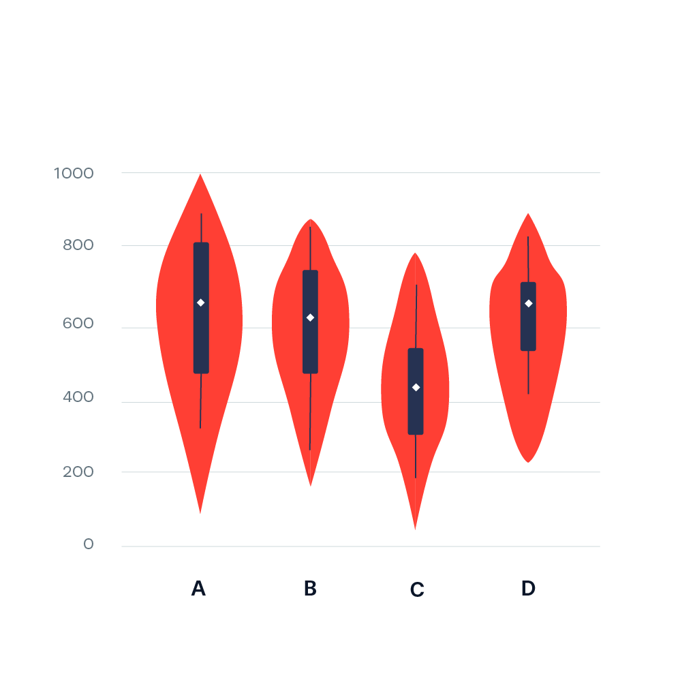
Menunjukkan distribusi data yang saling tumpang tindih dalam satu grafik.
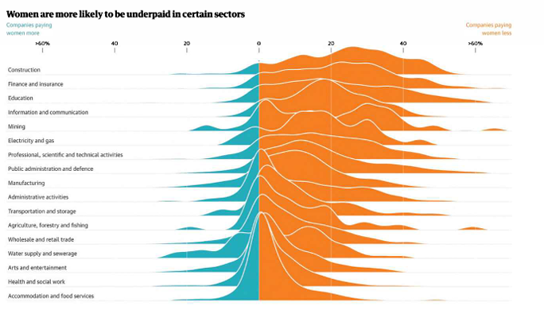
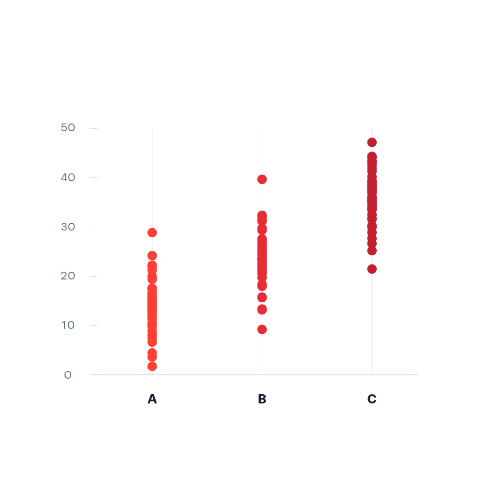
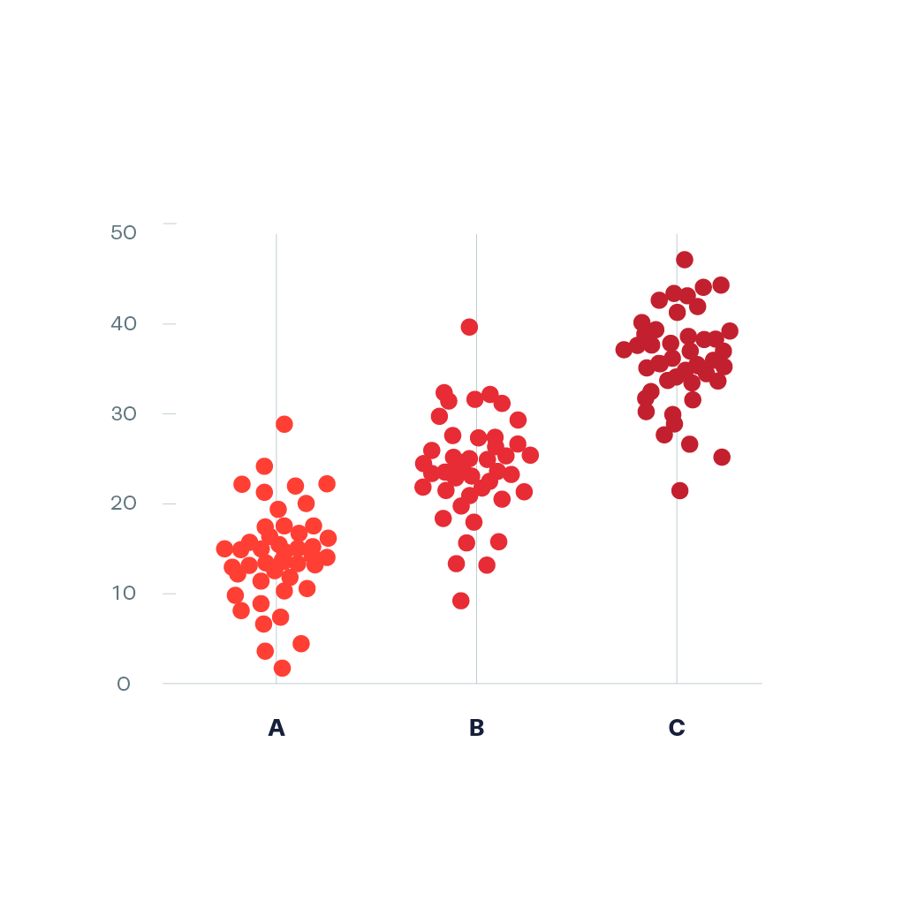 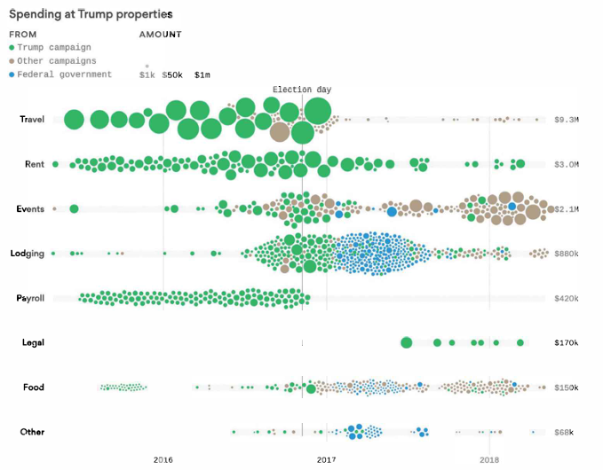
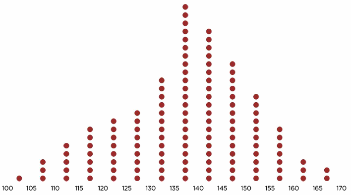 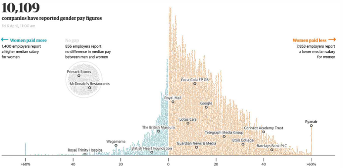
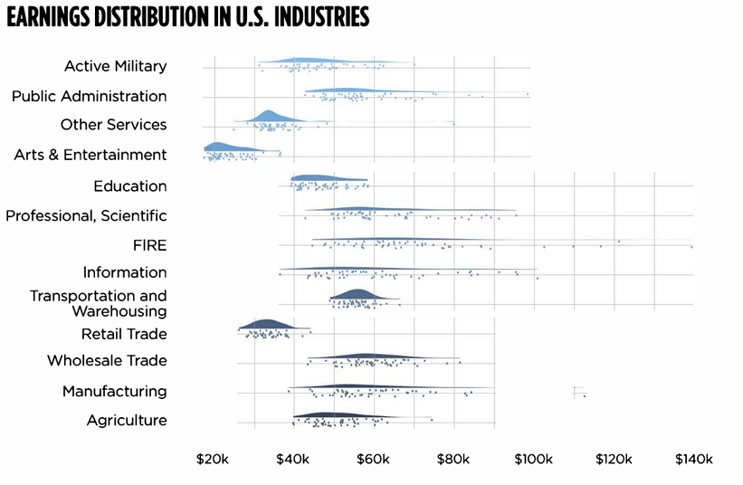
Digunakan untuk menampilkan distribusi angka dengan tetap mempertahankan nilai aslinya.
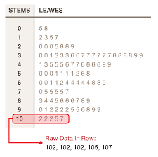
Ringkasan konsep visualisasi distribusi data.